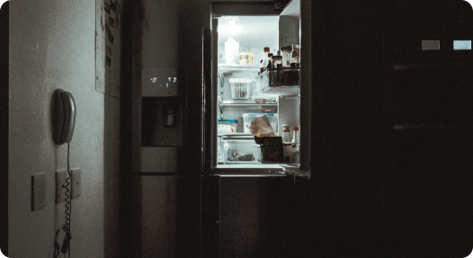
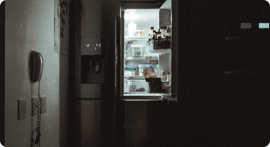
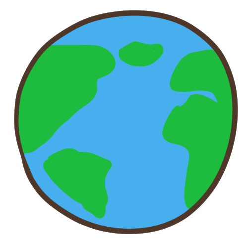

「氫氟碳化物」看似陌生，其實在每人家中與辦公室的冰箱，冷調設備中都有。氫氟碳化物是由氫、氟、碳原子鍵結形成，廣泛用於空調與冷凍裝置，雖然不像上一代「氟氯碳化物」（CFCs）那樣破壞臭氧層，但是卻讓氣溫升高，導致全球暖化，其「全球暖化潛勢」（GWP）高達二氧化碳的1萬倍。比二氧化碳還可怕的溫室氣體，就藏在冰箱與冷氣中。
據估計，若不禁止使用，僅氫氟碳化物就將在本世紀末造成0.5度的氣溫上升。
隨著國際環保意識抬頭，許多企業開始關注環保永續的議題，我也開始思考我的鳳梨事業，是否會造成環境負擔？我能否為環保盡一份心力？
雖說冷鏈技術的進步對於農產品的保鮮好處多多，但在整個流程都必須仰賴著「製冷劑」，而製冷劑的使用會產生許多氫氟碳化物（HFC）。根據研究統計，製冷劑產生的HFC佔了該物質總排放量的86%；而冷藏冷鏈所產生的HFC竟佔據了整體製冷劑碳排的35％
該如何平衡冷鏈外銷所增加的碳排問題，達成永續目的？
碳排放為目前全球所矚目的一大議題，政府可透過「鳳梨碳權」的計算，訂定相關碳排政策，彌補鳳梨外銷所造成的環境負擔。
________________________________________________________
鳳梨是臺灣種植面積最廣的作物之一，但採收後所遺留下的鳳梨莖和葉會形成大量廢料，令農民相當苦惱。近年發現鳳梨莖、葉可以提取纖維製造衣物和紙張等環保產物。得益於農委會積極推廣循環農業、農業永續發展的概念，鼓勵農民最大限度地循環利用資源以減少廢棄物的產生。在水資源管理方面，農委會鼓勵農民節水灌溉，並提供相關的訓練和技術支援；在農務方面鼓勵農民採用有機農法種植，減少對化學肥料和農藥依賴，也保護土壤品質和生態環境。農委會也透過積極參與國際合作，與各國的農業機構和專家進行交流合作。________________________________________________________
企業ESG指的是Environmental環境保護、Social社會責任、Governance公司治理，在時代的變遷之下，ESG儼然已成為現今注重的企業能力之一，透過評估、實踐及推動，落實真正的永續經營。臺灣於2022年3月公布「臺灣2050淨零排放路徑藍圖」，加速推動減碳永續。臺灣在農業領域的ESG上仍有不足，在碳權方面，沒有適合的管道可以接觸和購買綠能、小農負擔不起碳配額計算的驗證費用，所以集團化種植或大型農企業能更容易與企業進行合作，因此急需有明確的準則及計畫幫助碳權計算。就冷鏈物流技術而言，對於農產業的經濟發展有著必要性，也助於穩定鳳梨產業鏈。在鳳梨盛產季，希望透過加工延長供應期，持續打造臺灣鳳梨的優良品質形象。________________________________________________________
低碳農業的目的希望農民能採用減碳、循環、有機農法等措施減少對環境的衝擊，同時提高農產品的品質和競爭力，促進農業與環境的可持續發展。在碳排議題中，碳排放量需要進行地區性計算，如要計算一顆鳳梨的碳排放量，從種植開始就要在相關確認機制和單位協助下，計算相同條件下生產一顆鳳梨的碳排放量。在18個月的時間內，使用的肥料、人工管理、運輸過程等在內的碳排放量皆包含在內，整個過程的碳排放量相當可觀，因此也可鼓勵就地銷售，並加強消費者的食農教育，也是低碳農業所提倡的。臺灣鳳梨的冷鏈外銷技術在持續增長成熟的同時，有許多專家也正在為 SDGs 目標與碳排放減量努力中。期望未來臺灣的金鑽鳳梨不僅可以更穩定的外銷到世界各地，更讓地球能夠不再受到損害，讓經濟與環境達到互利與雙贏的局面

SDGS 2. 終止飢餓
---------------------
透過冷鏈技術的進步減少糧食浪費、提高農產品品質確保食品安全
SDGS 11. 永續城鎮與社區
---------------------
提高農民們的經濟保障，促進農業區鄉村的發展
SDGS 12. 永續的消費與生產模式
---------------------
推動食農教育建立支持當季國產水果的正確消費觀念
SDGS 17. 促進全球夥伴關係
---------------------
串連政府、供應鏈端及消費者，帶動鳳梨產業的永續發展
希望看完了金鳳董我的經驗分享後，能夠讓大家更加了解鳳梨外銷產業的相關知識，也希望大家能夠與我一起攜手， 在發展農產外銷經濟之餘，一同實踐永續發展的精神，為環境保護盡一份心力！